I wanted to understand how the US stock market really behaves over a long stretch of time. Not just that it goes up, but how rough the ride is, what risk actually means for a portfolio, and what a real bank failure can teach us about that risk. I started with the failure of Silicon Valley Bank in March 2023, and I worked backward from there into fifty years of market history. No trading strategy is sold here. No return is promised. All returns are price returns, which do not include reinvested dividends.
Repo link: github.com/jwavalosq/Analytics-on-Finance. It sits alongside the original files, it does not replace them.
The S and P 500 went from 93.0 on January 2, 1970 to 7,541.4 on November 2, 2026, price only. That is about 81.1 times the starting value. The Nasdaq went from 100.0 in February 1971 to 26,184.72 in October 2026, about 261.8 times the starting value. A chart on a log scale helps, because on a log scale equal distances mean equal percent changes.
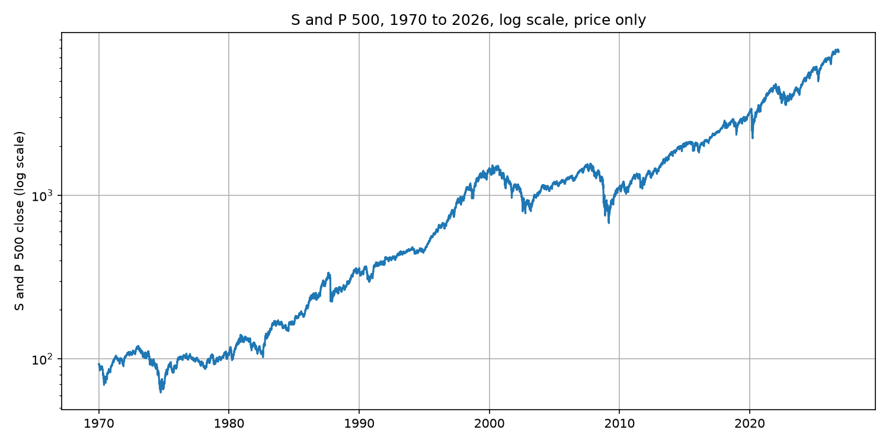
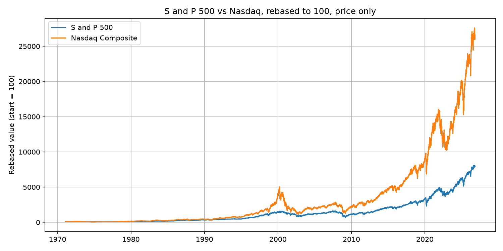
By decade, the 1990s grew fastest, at about 15.1 percent per year. The 2000s ended lower than they started, at about minus 2.6 percent per year. The best single year was 1995, plus 34.1 percent. The worst was 2008, minus 38.5 percent.
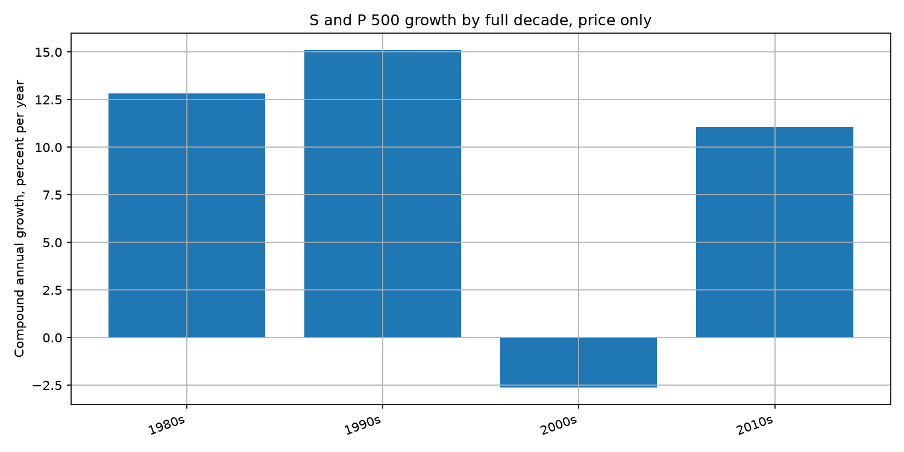
Volatility means bumpiness. A drawdown means a fall from a previous peak. There were 8 falls of 20 percent or more in this S and P 500 series. The deepest was 2007 to 2009, down 56.78 percent, recovered in March 2013. The fastest deep fall was in early 2020, down 33.92 percent in about a month, recovered in about 5 months. Falls like these are part of the story, not exceptions to it.
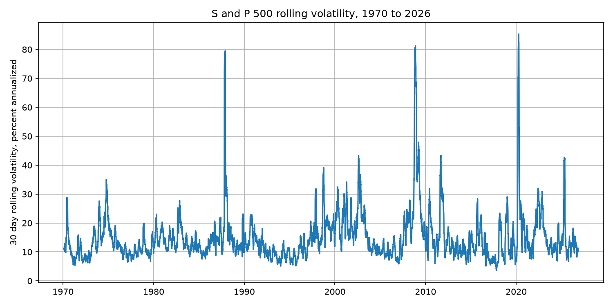
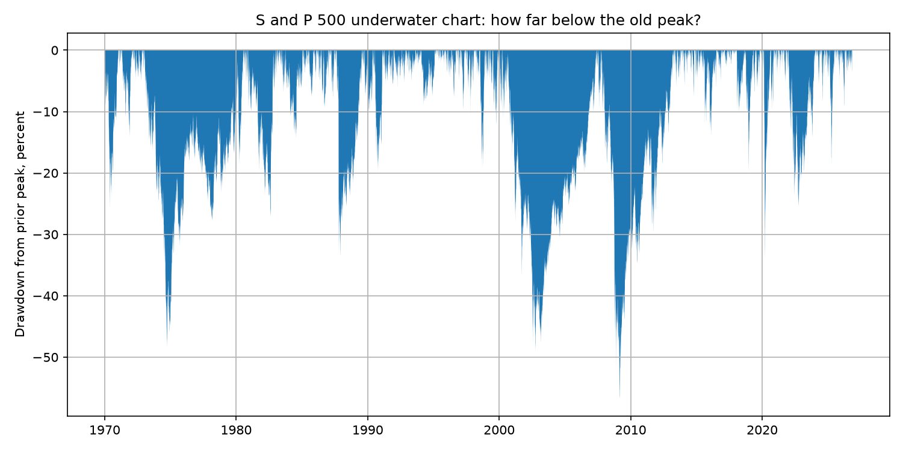
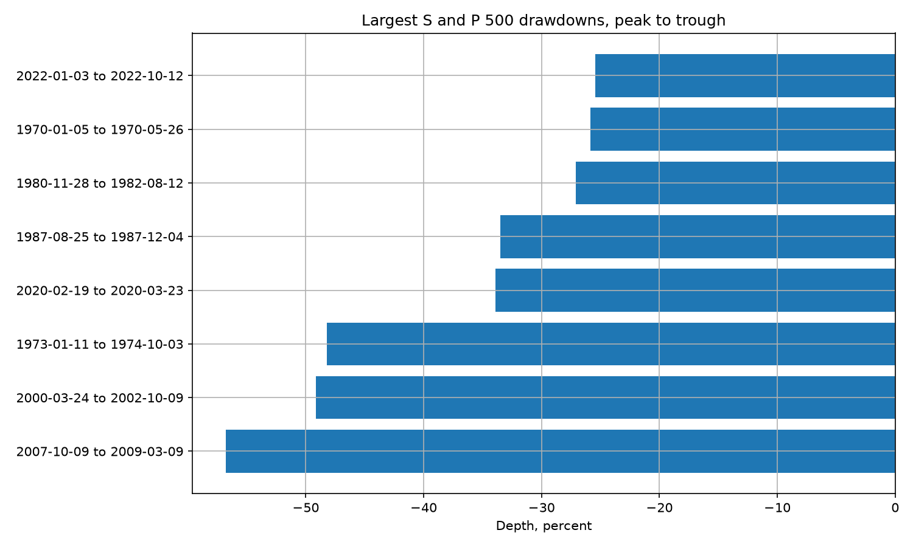
The VIX reflects expected swings, not direction. Its highest close here was 82.69 on March 16, 2020. In March 2023 it rose only to 26.52. Stress was real, but it was not 2020 level panic.
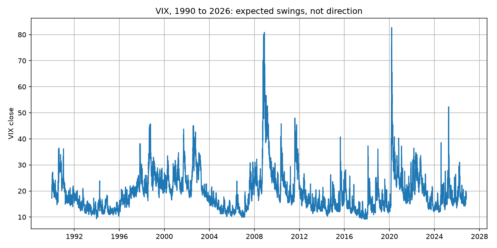
Return per unit of risk means yearly return divided by volatility. Diversification benefit means how much less bumpy a mix is than the average holding on its own. From November 2016 to October 2026, using the S and P 500, Nasdaq, and Dow, correlations were high, from 0.819 to 0.949. The equal mix volatility was 18.67 percent, versus an average single index volatility of 19.31 percent. The diversification benefit was only 0.64 percentage points. Mixing similar US stock indexes smooths the ride only a little, because the three indexes move together most of the time.
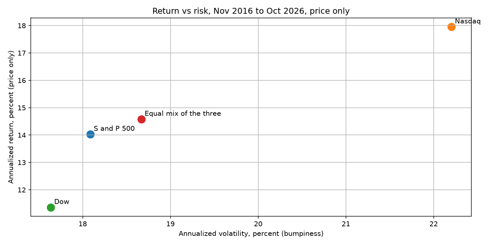
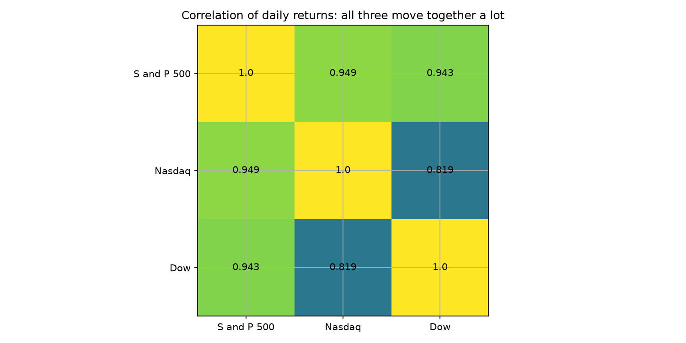
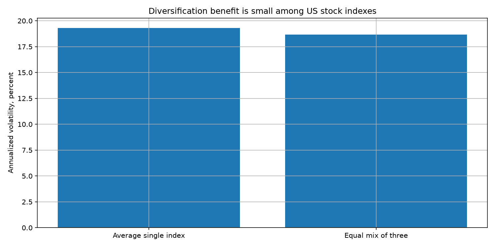
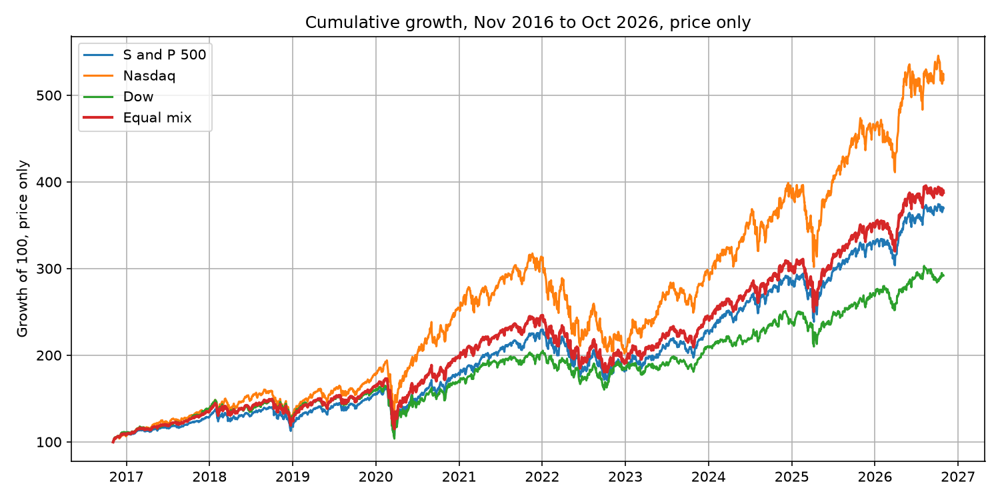
Silicon Valley Bank failed on March 10, 2023. Two ideas explain it. First, duration risk: when interest rates rise, long bonds fall in price. The 10 year Treasury yield in our FRED data was 0.52 percent in August 2020 and 3.98 percent on March 8, 2023. Second, a bank run: depositors with large balances above the 250,000 dollar insurance limit have reason to leave first, and they can leave fast.
At year end 2022, SVB held about 91 billion dollars of held to maturity bonds at book value, worth about 76 billion dollars at market prices. The unrealized loss was about 15.2 billion dollars, against equity of about 16.3 billion dollars. On March 8, 2023, SVB sold about 21 billion dollars of other bonds at a loss of about 1.8 billion dollars. On March 9, about 42 billion dollars was withdrawn in one day. On March 12, the Treasury, Federal Reserve, and FDIC announced all SVB deposits would be protected. The broad market recovered by the end of March, but the bank itself did not. That gap is the lesson: a single bank can fail fast even while the broad market recovers.
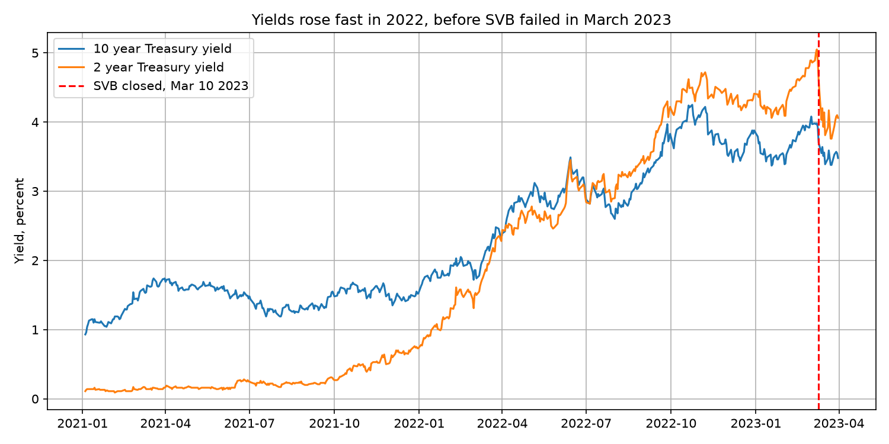
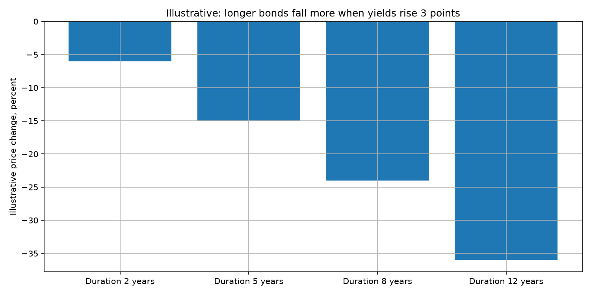
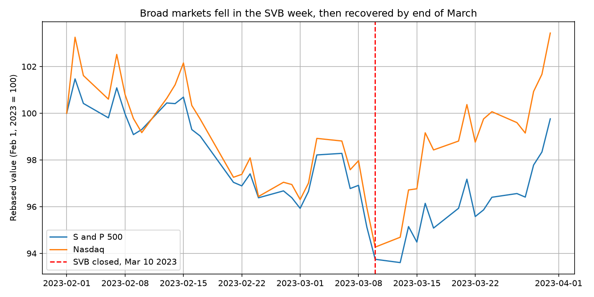
I built this score because raw growth hides the cost of getting there. Score, 0 to 100, higher is better. Score equals 100 times (1 minus depth as a fraction) divided by (1 plus recovery years from trough). A 20 percent fall recovered in 6 months scores about 53. A 50 percent fall recovered in 60 months scores about 8.
Highest major fall score: 1980 to 1982, 59.5. Lowest: 1973 to 1974, 7.6; 2007 to 2009, 8.6; 2000 to 2002, 9.0. Risk adjusted eras: 1990s, 1.07, highest; 2000s, minus 0.12, the only negative full decade. What I take from this is simple. The decade that grew fastest also rewarded investors best for the risk they took, and the decade that ended lower than it started punished them on both counts.
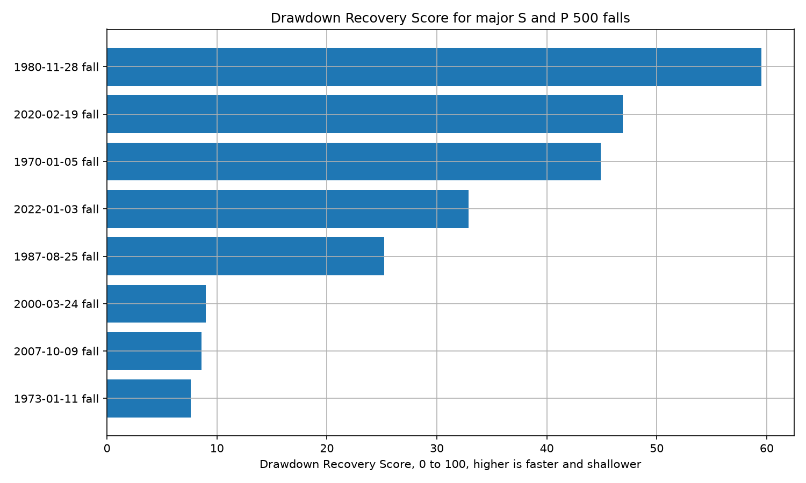
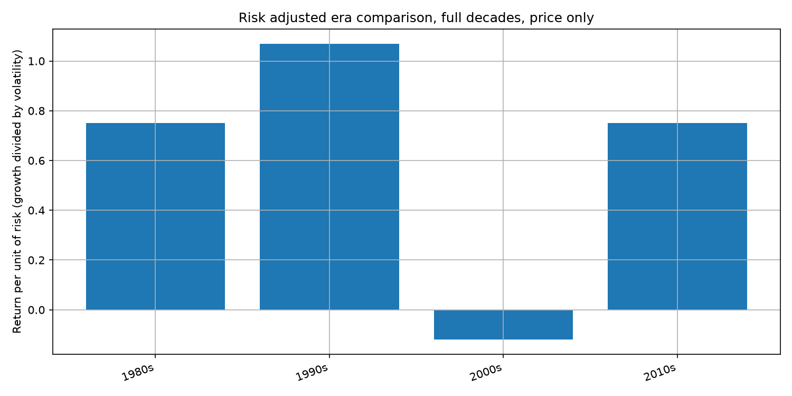
Stooq was tried and blocked by a browser verification page, so Yahoo and FRED were used instead. FRED S and P 500 and Dow downloads only return data from November 2016 onward, so they are used only for the portfolio window. Returns are price only, no dividends. The SVB bond chart is illustrative math, not SVB's actual portfolio. Uninsured deposit share is reported as a range, about 88 percent to about 94 percent, because sources differ. The old AI-trading.py script was not used as evidence, and no trading strategy is presented as profitable or validated. CPI was downloaded but not used in the main charts.
Sources: Yahoo Finance public chart API, FRED (Federal Reserve Bank of St. Louis), Federal Reserve review of SVB supervision (April 2023), SVB 10-K for year end 2022, and the joint Treasury, Federal Reserve, and FDIC statement of March 12, 2023. Full URLs are in data/raw/PROVENANCE.md in the project folder.
Start with notebook 00, then read in order to 05. Each notebook explains its ideas before it uses them. If you take one thing from this project, let it be this: growth is real, falls are normal, recovery times vary a lot, and diversification only helps when the things you mix actually behave differently.